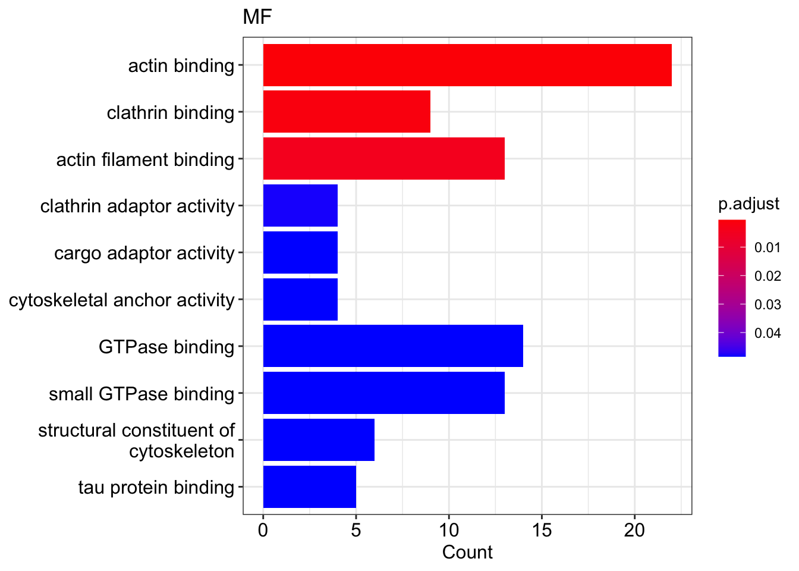
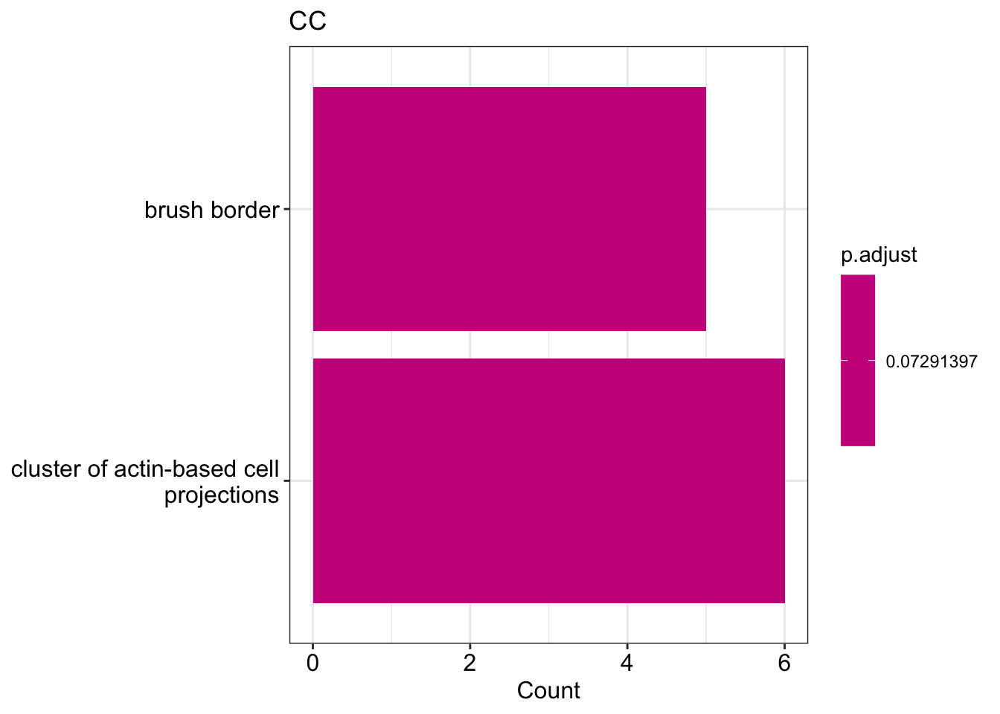

Chapter 6 GO and KEGG: PTB1 targets 09
6.1 Load the data
data_MAPP <- read.table("../data/inclusion_fractions_FG_RBFOX1_targets_05.tsv",
header = T)head(data_MAPP)6.2 Gene ontology (GO)
6.2.1 Prepare the gene list
genes <- data_MAPP %>% arrange(desc(ABSDIFF)) %>% dplyr::select(gene_id) %>%
unlist()
genes <- unlist(strsplit(genes, ","))head(genes)## gene_id1 gene_id2 gene_id3 gene_id4 gene_id5
## "ENSG00000157445" "ENSG00000081923" "ENSG00000114805" "ENSG00000117114" "ENSG00000065000"
## gene_id6
## "ENSG00000184611"6.2.2 Biological process (BP)
type_of_GO = "BP"
assign(paste0("GO_", type_of_GO), enrichGO(
genes,
organismDB,
keyType = "ENSEMBL",
ont = type_of_GO,
pvalueCutoff = pvalueCutoff,
minGSSize = minGSSize,
pAdjustMethod = "BH",
universe = universe,
readable = TRUE))
df_GO <- eval(parse(text = paste0("GO_", type_of_GO)))if(nrow(df_GO) > 0){
DT::datatable(df_GO@result %>% filter(p.adjust < 0.1), options = list(scrollX = TRUE))
} else "no GOs were found"if(nrow(df_GO) > 0){
barplot(df_GO, showCategory = showCategory,
title = type_of_GO)
} else "no GOs to plot"
6.2.3 Molecular function (MF)
type_of_GO = "MF"
assign(paste0("GO_", type_of_GO), enrichGO(
genes,
organismDB,
keyType = "ENSEMBL",
ont = type_of_GO,
pvalueCutoff = pvalueCutoff,
minGSSize = minGSSize,
pAdjustMethod = "BH",
universe = universe,
readable = TRUE))
df_GO <- eval(parse(text = paste0("GO_", type_of_GO)))if(nrow(df_GO) > 0){
DT::datatable(df_GO@result %>% filter(p.adjust < 0.1), options = list(scrollX = TRUE))
} else "no GOs were found"## [1] "no GOs were found"if(nrow(df_GO) > 0){
barplot(df_GO, showCategory = showCategory,
title = type_of_GO)
} else "no GOs to plot"## [1] "no GOs to plot"6.2.4 Cellular component (CC)
type_of_GO = "CC"
assign(paste0("GO_", type_of_GO), enrichGO(
genes,
organismDB,
keyType = "ENSEMBL",
ont = type_of_GO,
pvalueCutoff = pvalueCutoff,
minGSSize = minGSSize,
pAdjustMethod = "BH",
universe = universe,
readable = TRUE))
df_GO <- eval(parse(text = paste0("GO_", type_of_GO)))if(nrow(df_GO) > 0){
DT::datatable(df_GO@result %>% filter(p.adjust < 0.1), options = list(scrollX = TRUE))
} else "no GOs were found"if(nrow(df_GO) > 0){
barplot(df_GO, showCategory = showCategory,
title = type_of_GO)
} else "no GOs to plot"
6.3 KEGG
6.3.1 Prepare the the data
# select gene_id in ENSEMBL format and DIFF from the result table
DIFF <- data_MAPP %>% dplyr::select(gene_id, DIFF)
# rename the gene_id column
names(DIFF)[1] <- "ENSEMBL"
head(DIFF)
# create new df by converting ENSEMBL ID into ENTREZID and adding DIFF column
# sort table by in descending order by abs(DIFF)
genes_ENTREZ_df <- bitr(data_MAPP$gene_id, fromType = "ENSEMBL",
toType = "ENTREZID", OrgDb= organismDB) %>%
left_join(DIFF, by = "ENSEMBL") %>%
arrange(desc(abs(DIFF)))## 'select()' returned 1:1 mapping between keys and columns## Warning in bitr(data_MAPP$gene_id, fromType = "ENSEMBL", toType = "ENTREZID", : 2.63% of
## input gene IDs are fail to map...head(genes_ENTREZ_df )
# create a vector with DIFF values
genes_DIFF <- genes_ENTREZ_df$DIFF
genes_DIFF## [1] -0.8358725 -0.7708317 -0.7312835 -0.6673038 -0.6374273 -0.6120330 -0.5837685 -0.5625818
## [9] -0.5498302 -0.5449858 -0.5156668 -0.5131267 -0.4974824 -0.4913183 -0.4904037 -0.4874627
## [17] -0.4858158 -0.4720300 -0.4712907 -0.4669026 -0.4629705 -0.4629685 -0.4464172 -0.4308766
## [25] -0.4305493 -0.4210806 -0.3956039 -0.3937624 -0.3929403 -0.3869039 -0.3866421 -0.3806583
## [33] -0.3748361 -0.3703570 -0.3619472 -0.3590499 -0.3582381 -0.3411725 -0.3346450 -0.3318807
## [41] -0.3121855 -0.2937947 -0.2823431 -0.2775016 -0.2760941 -0.2750906 -0.2697988 -0.2569122
## [49] -0.2449537 -0.2428994 -0.2399435 -0.2374465 -0.2350401 -0.2350125 -0.2348441 -0.2331630
## [57] -0.2252108 -0.2226148 -0.2190513 -0.2188537 -0.2127283 -0.2120938 -0.2090721 -0.2050971
## [65] -0.1995887 -0.1986934 -0.1963116 -0.1953891 -0.1907279 -0.1855108 -0.1852250 -0.1802956
## [73] -0.1790388 -0.1769819 -0.1762969 -0.1746900 -0.1733775 -0.1733665 -0.1732260 -0.1679415
## [81] -0.1645351 -0.1580064 -0.1465838 -0.1443043 -0.1438500 -0.1429955 -0.1427919 -0.1425537
## [89] -0.1360011 -0.1316578 -0.1308839 -0.1304457 -0.1265238 -0.1258436 -0.1252140 -0.1244610
## [97] -0.1230552 -0.1219384 -0.1218169 -0.1186675 -0.1180657 -0.1172783 -0.1171512 -0.1159673
## [105] -0.1117122 -0.1106982 -0.1105960 -0.1098876 -0.1088295 -0.1088234 -0.1065946 -0.1056889
## [113] -0.1052476 -0.1052013 -0.1020050 -0.1018100 -0.1006553# add names based on ENTREZID
names(genes_DIFF) <- genes_ENTREZ_df$ENTREZID
genes_DIFF## 55799 5205 23007 23266 8943 90134 57828 1936
## -0.8358725 -0.7708317 -0.7312835 -0.6673038 -0.6374273 -0.6120330 -0.5837685 -0.5625818
## 4771 427 91050 5378 91012 92335 23301 2199
## -0.5498302 -0.5449858 -0.5156668 -0.5131267 -0.4974824 -0.4913183 -0.4904037 -0.4874627
## 817 8567 10059 117 57568 10059 4897 8028
## -0.4858158 -0.4720300 -0.4712907 -0.4669026 -0.4629705 -0.4629685 -0.4464172 -0.4308766
## 10129 22864 783 93664 2887 4209 4676 4345
## -0.4305493 -0.4210806 -0.3956039 -0.3937624 -0.3929403 -0.3869039 -0.3866421 -0.3806583
## 4430 207063 9208 26260 26037 1936 8618 55605
## -0.3748361 -0.3703570 -0.3619472 -0.3590499 -0.3582381 -0.3411725 -0.3346450 -0.3318807
## 9750 114327 1781 55605 124565 6185 7337 84326
## -0.3121855 -0.2937947 -0.2823431 -0.2775016 -0.2760941 -0.2750906 -0.2697988 -0.2569122
## 1305 6242 9112 825 5796 84081 114883 6749
## -0.2449537 -0.2428994 -0.2399435 -0.2374465 -0.2350401 -0.2350125 -0.2348441 -0.2331630
## 10525 51026 114883 55605 4036 57655 8882 10561
## -0.2252108 -0.2226148 -0.2190513 -0.2188537 -0.2127283 -0.2120938 -0.2090721 -0.2050971
## 5923 79701 726 220869 83787 85397 323 4212
## -0.1995887 -0.1986934 -0.1963116 -0.1953891 -0.1907279 -0.1855108 -0.1852250 -0.1802956
## 287 130340 134429 4152 8502 26750 8853 1974
## -0.1790388 -0.1769819 -0.1762969 -0.1746900 -0.1733775 -0.1733665 -0.1732260 -0.1679415
## 8496 8073 101927314 1759 25854 8555 51304 124540
## -0.1645351 -0.1580064 -0.1465838 -0.1443043 -0.1438500 -0.1429955 -0.1427919 -0.1425537
## 10755 55975 57153 4139 10175 25854 283130 113402
## -0.1360011 -0.1316578 -0.1308839 -0.1304457 -0.1265238 -0.1258436 -0.1252140 -0.1244610
## 22872 79621 5504 146664 23348 55638 6597 5747
## -0.1230552 -0.1219384 -0.1218169 -0.1186675 -0.1180657 -0.1172783 -0.1171512 -0.1159673
## 54960 9819 26011 9941 23175 4800 8611 26269
## -0.1117122 -0.1106982 -0.1105960 -0.1098876 -0.1088295 -0.1088234 -0.1065946 -0.1056889
## 22978 55743 8573 8559 285761
## -0.1052476 -0.1052013 -0.1020050 -0.1018100 -0.10065536.3.2 run KEGG
KEGGresults <- enrichKEGG(
names(genes_DIFF),
organism = "hsa",
keyType = "ncbi-geneid",
pvalueCutoff = 0.1,
pAdjustMethod = "BH",
universe = as.character(na.omit(ENTREZ_universe)),
use_internal_data = FALSE
)
KEGGresults## #
## # over-representation test
## #
## #...@organism hsa
## #...@ontology KEGG
## #...@keytype ncbi-geneid
## #...@gene chr [1:111] "55799" "5205" "23007" "23266" "8943" "90134" "57828" "1936" "4771" "427" ...
## #...pvalues adjusted by 'BH' with cutoff <0.1
## #...0 enriched terms found
## #...Citation
## T Wu, E Hu, S Xu, M Chen, P Guo, Z Dai, T Feng, L Zhou, W Tang, L Zhan, X Fu, S Liu, X Bo, and G Yu.
## clusterProfiler 4.0: A universal enrichment tool for interpreting omics data.
## The Innovation. 2021, 2(3):100141